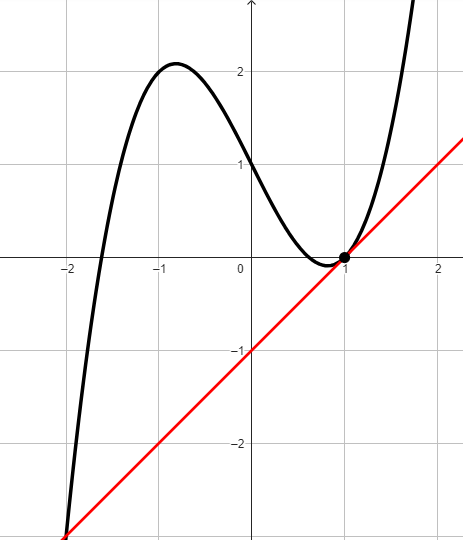
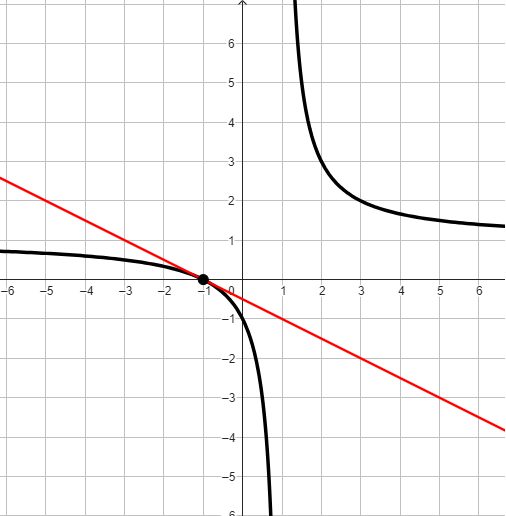
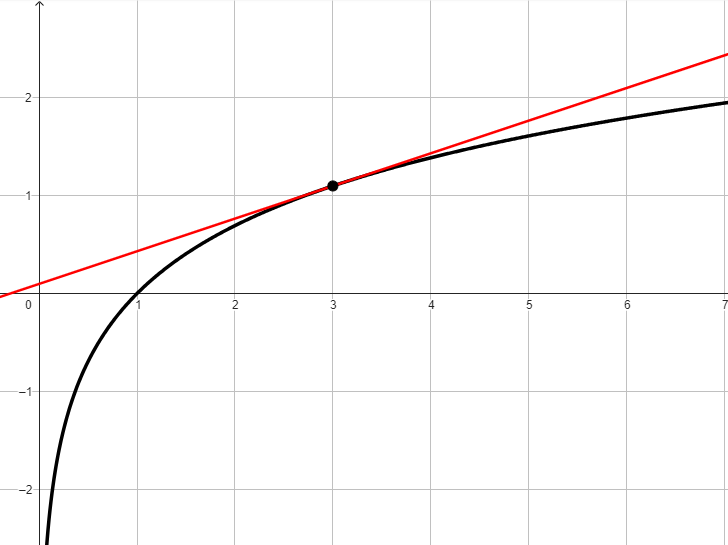

Di seguito sono rappresentati i grafici di tre funzioni, che chiamiamo rispettivamente
\(f\), \(g\), \(s\).
Calcolare la derivata della funzione \(f\) in \(x = 1\)

Calcolare la derivata della funzione \(g\) in \(x = -1\)

Calcolare la derivata della funzione \(s\) in \(x = 3\)
